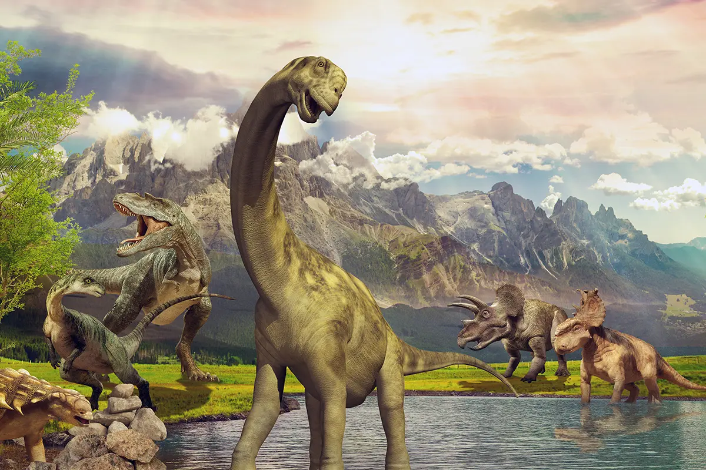
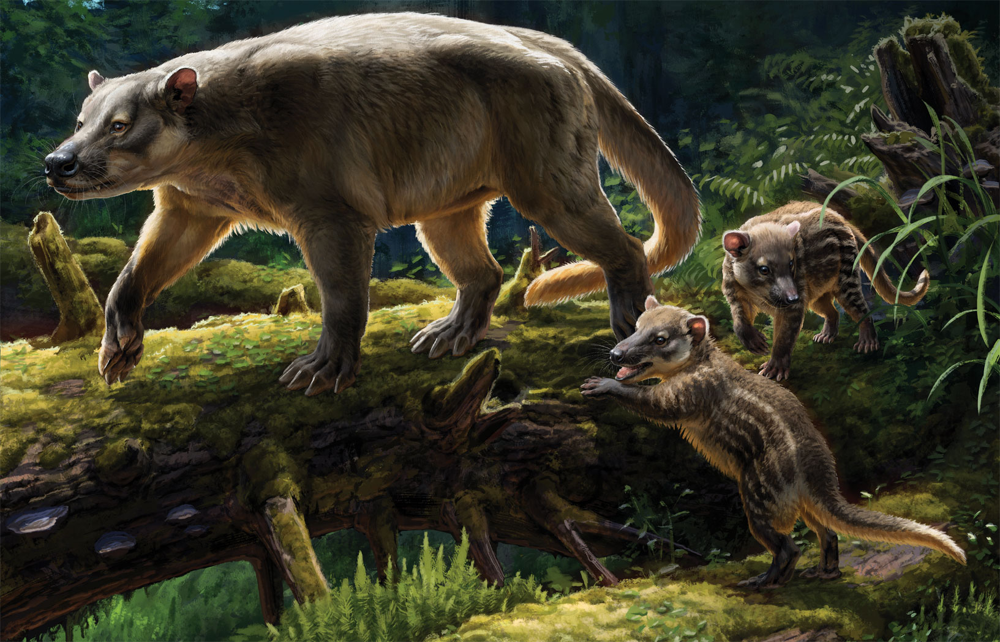
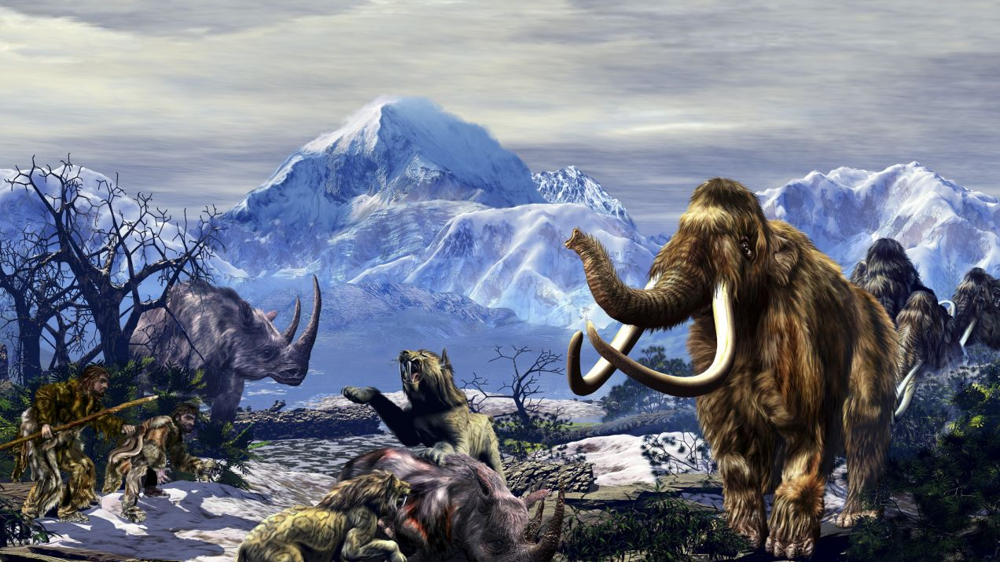

Era Dinozaurów
Ssaki pojawiły się na Ziemi około 200 milionów lat temu, co oznacza, że istnieją od czasów panowania dinozaurów, które dominowały naszą planetę przez setki milionów lat. Wówczas, w tym niezwykłym okresie geologicznym, ssaki musiały przystosować się do ekstremalnych warunków środowiska i rywalizować o przetrwanie z ogromnymi i potężnymi dinozaurami. To była era, kiedy różnorodność życia eksplodowała, dając początek dzisiejszemu rozmieszczeniu gatunków ssaków na całym świecie. Ssaki ewoluowały, by stać się bardziej złożonymi organizmami, a ich różnorodność rozwinęła się na przestrzeni milionów lat, tworząc niezwykłe formy dostosowane do różnych środowisk - od ssaków wodnych po te zamieszkujące lądy i powietrze.
Pierwsze Ssakowate
Pierwsi prawdziwi przedstawiciele ssaków pojawili się około 150 milionów lat temu, co oznacza, że ich ewolucja jest znacznie starsza, niż mogłoby się wydawać na pierwszy rzut oka. Wczesne ssaki, mimo że byli stosunkowo małymi zwierzętami w porównaniu z dinozaurami, miały cechy, które pozwoliły im przetrwać i ewoluować w różnorodne gatunki, które znamy dzisiaj. Ich zdolność do dostosowywania się do różnych środowisk i zmieniających się warunków przyczyniła się do ich długotrwałego sukcesu w procesie ewolucji. Pierwsi ssakowate musiały konkurować o pożywienie i przestrzeń z innymi organizmami, co sprzyjało selekcji naturalnej i prowadziło do powstawania coraz bardziej zaawansowanych cech adaptacyjnych.
Ssaki w Czwartorzędzie
W czasach czwartorzędu, który rozpoczął się około 2,6 miliona lat temu, ssaki osiągnęły ogromne zróżnicowanie. W tej epoce pojawiły się różnorodne gatunki ssaków, zaczynając od olbrzymich ssaków lądowych po małe ssaki latające. To była również era, kiedy pojawił się homo sapiens, czyli ludzie, nasza własna gatunek. Nasza zdolność do myślenia, rozumienia i tworzenia narzędzi pozwoliła nam na przetrwanie i dominację nad innymi gatunkami. Czwartorzęd to okres, w którym zmiany klimatyczne i ewolucyjne ukształtowały naszą planetę, tworząc środowisko, które jest znane nam dzisiaj. Ssaki w tej erze musiały dostosować się do zmieniających się warunków klimatycznych, a niektóre gatunki przystosowały się do życia w lodowatych obszarach polarowych, podczas gdy inne zamieszkały gorące i wilgotne lasy równikowe.